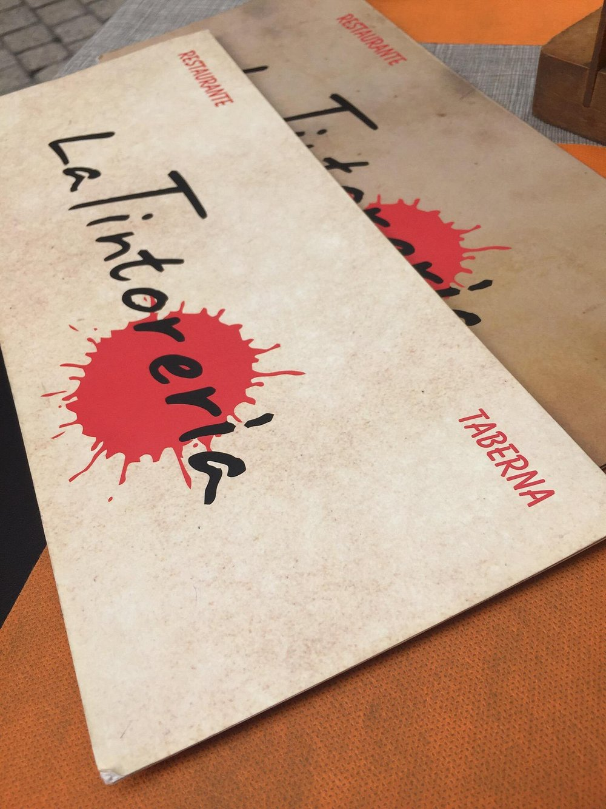

C/ Espoz y Mina, 20. 28012 Madrid
Carta tradicional con toques imaginativos
Cocina siempre abierta
Tostas, raciones y recetas mediterráneas en los sótanos de ladrillo y piedra vista de un edificio del siglo XVII. Un entorno con historia que crea una atmósfera íntima y con mucho encanto.
El nombre La Tintorería no es casual: es un guiño a nuestra cuidada selección de vinos. Tintos, blancos, rosados y espumosos pensados para todos los gustos y bolsillos. Una bodega pensada para acompañar cada plato, cada momento, y cada tipo de comensal.
En La Tintorería te espera una experiencia gastronómica brutal: comida que está de escándalo, hecha con mimo y creatividad, por un precio que no te hará temblar la cartera.
Ideal para quienes valoran el sabor auténtico, la atención cuidada y el placer de comer bien sin complicaciones.
